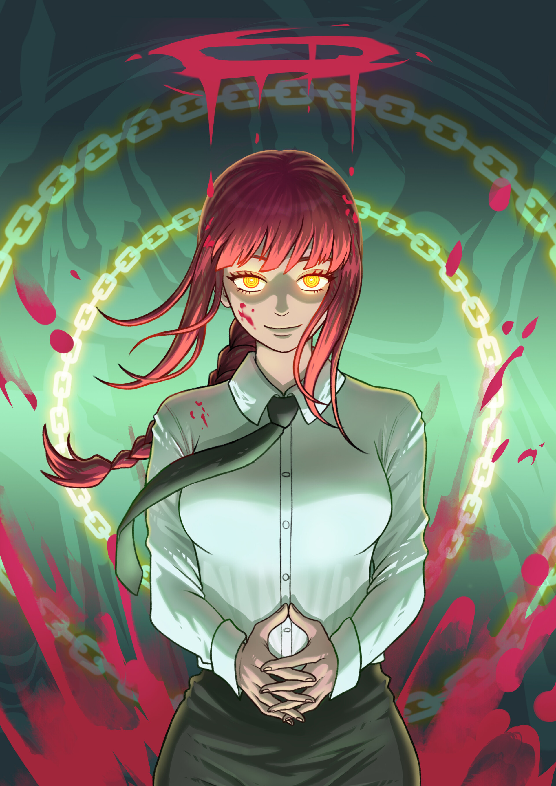
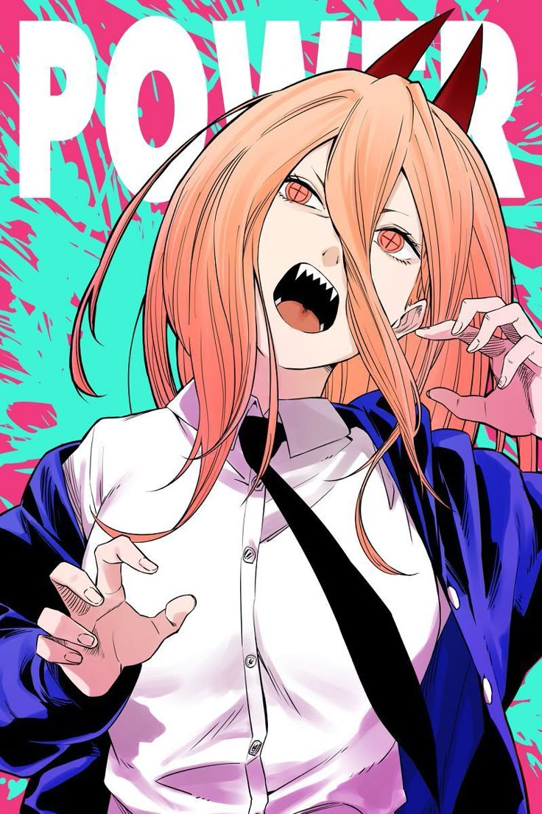
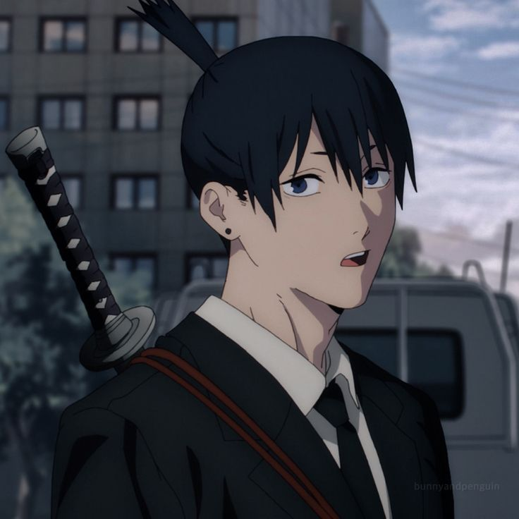
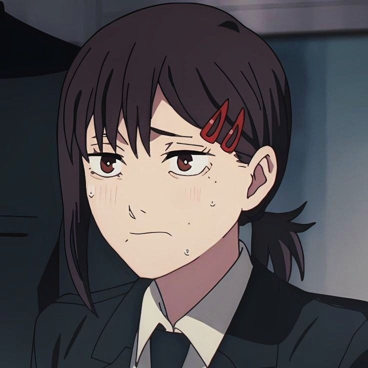
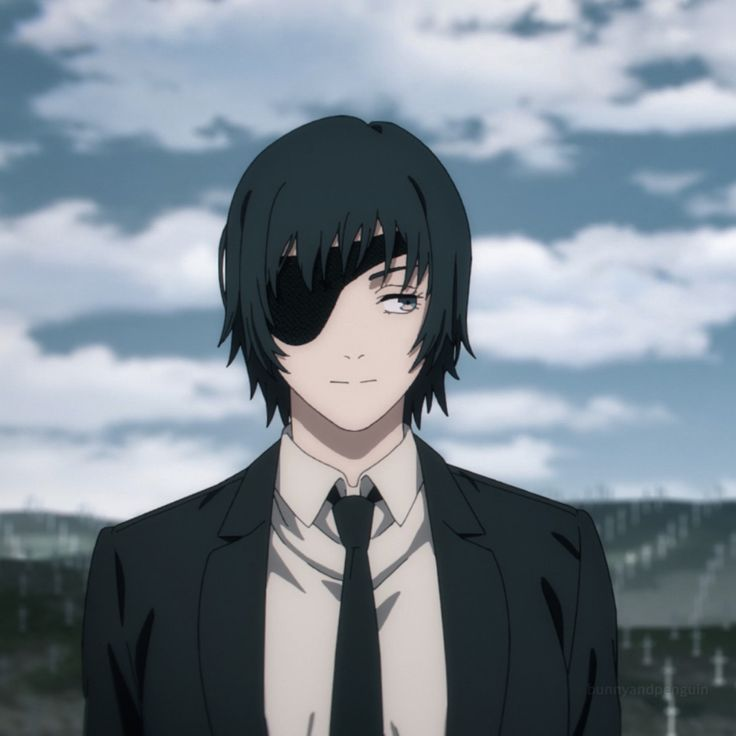
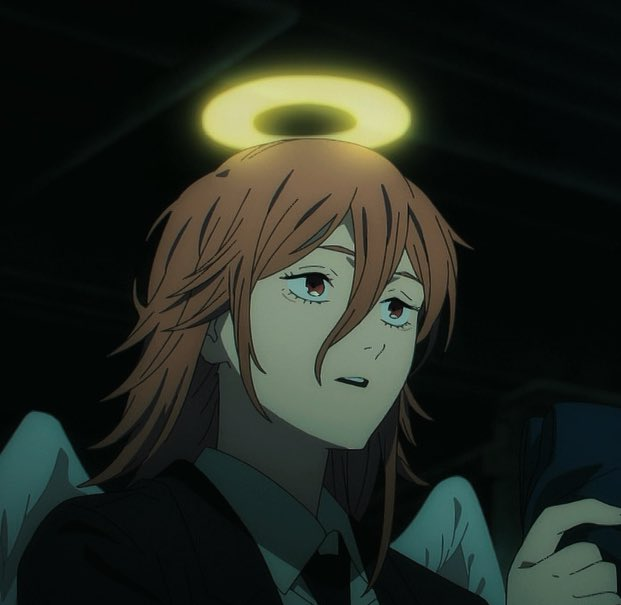
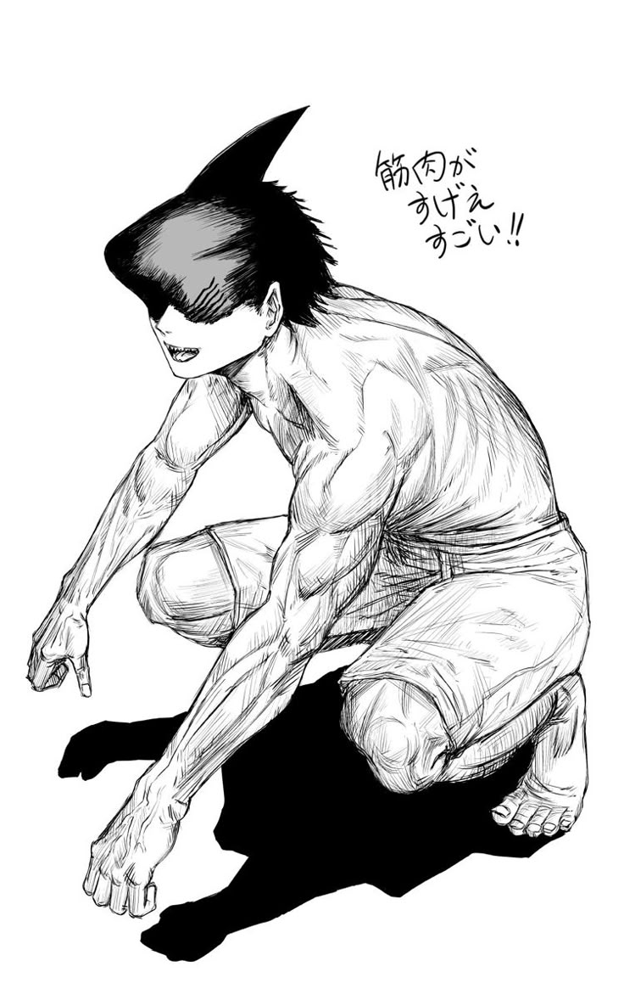
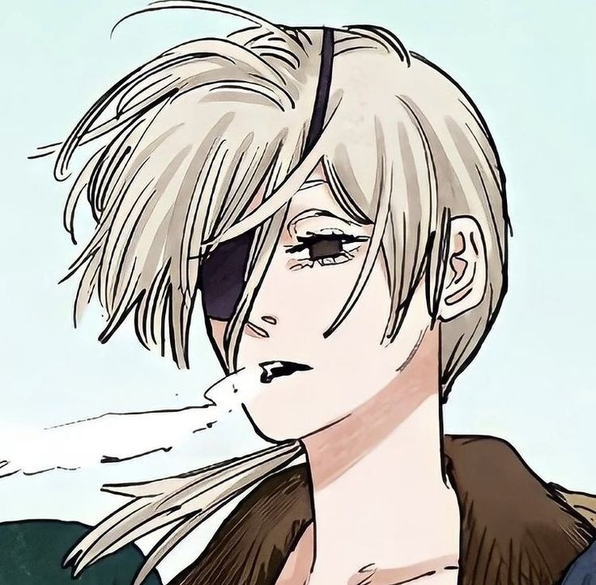

القصة الكاملة لرجل المنشار
تدور أحداث القصة في عالم تعيش فيه الشياطين التي تتجسد من مخاوف البشر. دنغي هو فتى فقير يعيش مع والده المدين، وبعد موت والده يجد نفسه غارقاً في الديون. يعمل دنغي كصياد شياطين مع شيطان المنشار "بوتشيتا" الذي يصبح صديقه الوحيد.
بعد خيانة مروعة، يُقتل دنغي ولكن بوتشيتا يضحّي بنفسه لينقذه، مانحاً إياه قلباً جديداً وقدرة التحول إلى رجل المنشار. ينضم دنغي إلى المنظمة العامة لصيد الشياطين تحت قيادة ماكيما الغامضة، حيث يبدأ رحلته في عالم مليء بالخيانة والعنف والصداقة.
المواضيع الرئيسية
تتناول القصة مواضيع عميقة مثل الفقر والاستغلال، معنى الإنسانية، قوة الرغبات البشرية، والعلاقات المعقدة بين الشخصيات. تقدم القصة مزيجاً فريداً من العنف المفرط والكوميديا السوداء والعواطف الإنسانية الصادقة.
الشخصيات الرئيسية
تعرف على أبرز شخصيات مانجا رجل المنشار
دنغي
البطل الرئيسي
القدرة: التحول إلى رجل المنشار
النوع: هجين شيطان-إنسان
السمات: ساذج، صادق، يحلم بحياة عادية
فتى يتيم فقير يصبح صياد شياطين بعد دمج جسده مع شيطان المنشار. يحلم بأشياء بسيطة مثل الخبز المحمص والفتيات الجميلات.

ماكيما
قائدة المنظمة العامة
القدرة: السيطرة على الآخرين
النوع: شيطان
السمات: غامضة، متحكمة، خطيرة
قوية وغامضة تتحكم في المنظمة العامة. لديها اهتمام خاص بدنغي وتستخدمه لتحقيق أهدافها الخاصة.

باور
شيطان الدم
القدرة: تحويل الدم إلى أسلحة
النوع: هجين شيطان-إنسان
السمات: فوضوية، أنانية، مضحكة
شيطان الدم التي تصبح صديقة دنغي. أنانية وفوضوية لكنها وفية لأصدقائها. تعشق قطتها ميوني أكثر من أي شيء آخر.

أكي هاياكاوا
صياد شياطين
القدرة: عقد مع شيطان الثعلب
النوع: إنسان
السمات: جاد، منضبط، يحمل مأساة شخصية
صياد شياطين محترف يعمل مع دنغي وباور. لديه ماضٍ مأساوي ويحمل كراهية شديدة للشياطين بعد أن دمرت عائلته.

كوبيني
صيادة شياطين
القدرة: مهارات قتالية عالية
النوع: إنسان
السمات: خائفة، عصبية، غير واثقة
صيادة شياطين خائفة باستمرار لكنها تمتلك مهارات قتالية مذهلة. تعاني من ضغوط عائلية تجبرها على العمل في هذه المهنة الخطيرة.

هيمينو
صيادة شياطين
القدرة: عقد مع شيطان الشبح
النوع: إنسان
السمات: كاريزمية، مدمنة كحول، شجاعة
صيادة شياطين مخضرمة تعمل مع أكي. تمتلك شخصية كاريزمية وقوية لكنها تعاني من إدمان الكحول. تضحي بنفسها لإنقاذ أكي في معركة ضد شيطان البندقية.

أنجل ديفل
شيطان
القدرة: امتصاص عمر الآخرين
النوع: شيطان
السمات: هادئ، كسول، غير مؤذي
شيطان غير عدائي يعمل مع المنظمة العامة. لديه قدرة خطيرة لكنه يفضل النوم والراحة. يكره العنف ولا يحب استخدام قواه.

بيم
شيطان القرش
القدرة: تحويل أجزاء الجسم لأسماك قرش
النوع: شيطان
السمات: غبي، مخلص، عنيف
شيطان القرش الذي يعبد دنغي ويطلق عليه لقب "اللورد". غبي جداً لكنه قوي ومخلص بشكل أعمى لدنغي.
ريز
شيطان القنبلة
القدرة: تحويل أجزاء الجسم إلى قنابل
النوع: هجين شيطان-إنسان
السمات: ذكية، خطيرة، غامضة
هجينة شيطان القنبلة التي تظهر كفتاة لطيفة لكنها في الحقيقة قاتلة محترفة. تقع في حب دنغي لكن ولاءاتها المزدوجة تسبب صراعاً داخلياً لها.

كوانزي
شيطان القوس والنشاب
القدرة: إنشاء أسهم من أي شيء
النوع: هجين شيطان-إنسان
السمات: صامتة، قوية، غير عاطفية
أقوى صيادة شياطين في الصين وهجينة شيطان القوس والنشاب. تمتلك مهارات قتالية أسطورية وتقاتل باستخدام قوس ونشاب.
أركات القصة
المراحل الرئيسية لتطور القصة في مانجا رجل المنشار
أركة البداية
الفصول 1-10
تعريف بشخصية دنغي وحياته البائسة، موت والده، ولقاؤه مع بوتشيتا شيطان المنشار. تحوله إلى صياد شياطين وانضمامه للمنظمة العامة.
أركة المنظمة العامة
الفصول 11-40
تعرف دنغي على فريق أكي هاياكاوا وباور وهيمينو. معارك ضد شياطين خطيرة واكتشاف المزيد عن أهداف ماكيما الغامضة.
أركة شيطان البندقية
الفصول 41-70
مواجهة مع شيطان البندقية الذي يهدد وجود البشرية. خسائر كبيرة في صفوف الصيادين وتطورات صادمة في العلاقات بين الشخصيات.
أركة السيطرة
الفصول 71-97
الصراع النهائي مع ماكيما وكشف أسرارها الحقيقية. دنغي يواجه أصعب الاختيارات في حياته بين انتقامه ورغبته في حياة طبيعية.
طريقة مشاهدة الأنمي
روابط مباشرة لمشاهدة أنمي رجل المنشار على المنصات المختلفة
ترتيب المشاهدة الموصى به:
- الموسم الأول (الحلقات 1-12)
- المواد الإضافية (OVA)
- فيلم Chainsaw Man: Reze Arc (قريباً)